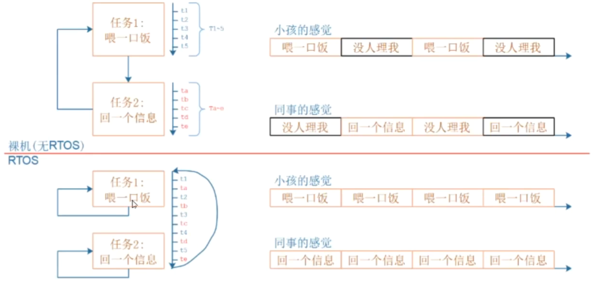

1.主要内容与学习目的
1.1 内容
栈作用演示
创建任务的2个核心：栈、任务结构体
任务调度机制
基于链表理解调度机制
队列的使用
基于链表理解队列
1.2 学习目的
中度掌握——知道内部机制
1.3 RTOS与裸机程序的区别
核心在于：任务的交替执行
1.4 后续例程所使用文件
备用：并无高端技巧，该文件在STM32F103上搭建好环境方便测试而已。
2.概念理解
任务：本质就是一个运行起来的函数，包含信息有：一段保存在flash上的代码（无法更改）、任务运行的位置、任务运行的环境（各种局部变量）。
函数引申出下列的问题，任务切换时会暂停任务，那么如何暂停任务并且恢复任务

怎么暂停/恢复任务，需要保存哪些东西：任务执行的位置，变量的值不能被破坏以及其他一些需要注意的事项。
2.1 函数运行环境理解示例
通过add_val函数理解函数运行过程中如果被打断，需要保存哪些东西，理解函数运行的本质。并且理解需要哪些东西才可以让这个函数恢复运行。

通过Keil工具查看add_val函数的反汇编代码，进行分析

2.1.1 ARM架构基础知识补充（以F103为例）

- CPU与内存的关系，计算a+b的过程
读a、读b、计算a+b、写入a+b

CPU从内存中将数据读到哪里？CPU内部有多个寄存器，读入的数据保存在CPU内部寄存器中
CPU如何读取数据？需要知道源、目的、长度
CPU怎么知道执行这样的一个操作来对数据进行执行？CPU读Flash得到指令，执行读取内存的指令
CPU如何知道要将读取的数据放到哪一个CPU内部寄存器呢？CPU不知道，它所有操作都是从程序中读取出来的，程序告诉它保存在哪，这些指令叫做机器码
2.1.2 汇编代码讲解
函数开始，假设刚开始sp=addr1
- PUSH {r3, lr}
PUSH指令本质是一条写内存指令，将R3和Lr寄存器的值放入栈中。
lr等于当前程序的返回地址，也就是下一条指令prvsetupHardware()函数的地址。
栈的地址由sp指针决定，高标号的寄存器放在高地址，低标号寄存器在低地址，即括号里面的内容没有序号的排放也可以。
假设sp（R13）为addr1，那么效果图如下

temp = *pa
- LDR r2,[r0,#0x00]
在调用C函数的时候，有约定少于四个参数的函数的形参，第一个参数保存在r0，第二个参数保存在r1，第三个参数保存在r2，第四个参数保存在r3。
因此，这里的R0=&a=a的地址，这条指令的意义在于去a的地址读取数据，保存在R2里面，R2寄存器的值目前是&a的值偏移地址0位所在地址读取到的值。R2 = a.
- STR r2,[sp,#0x00]
将R2，放到sp+0所在的地址上，这会[sp+ 0x00]地址的值充当一个Temp临时变量
temp = [sp + 0x00] = a

temp=temp+*pb
- LDR r2,[r1,#0x00]
R2 = [R1+0x00] = [&b] = b
- LDR r3,[sp,#0x00]
R3 =[sp + 0x00] = temp = a
- ADD r2,r2,r3;
R2 = R2 + R3 = b + temp
- STR r2,[sp,#0x00]
[sp + 0x00] = R2 = b + temp
即，temp = temp + *pb
*pa=temp
- LDR r2,[sp,#0x00]
将[sp+ 0x00]地址的值读取到R2
即：R2 = [sp +0x00] = temp
- STR r2,[r0,#0x00]
将R2的值存放到[sp + 0x00]的地址
即[sp + 0x00 ] = R2 = temp，此时[sp+0x00]地址所存放的值是运算的结果
- POP {r3, pc}
POP本质是一条读内存的指令，这里从内存中读取出数据赋值给R3和pc。
低地址取值出来放入低标号的寄存器中，高地址取值出来放入高标号的寄存器中；
对于上文中提到的入栈情况，效果如图：
lr寄存器中保存着原来程序的返回地址，现在将原来程序的返回地址放入pc寄存器中吗，使得其成为当前要执行指令的地址。
先将此时sp栈指针指向地址（低地址）的值（运算结果）取出放入R3寄存器（低标号）中，然后sp指针-4；
再将此时sp栈指针指向的地址（高地址）的值取出放入pc寄存器（高标号）中，然后sp指针-4；
这会pc指针指向即将执行的下一条指令的地址，即函数执行完毕，准备返回主程序继续执行。
2.1.3 中断假设与现场保存
假设在下图中的位置突然发生中断，如何保存现场？

为了使得返回现场时，能继续工作，在我们假设的这个场景里面需要在跳转去中断的时候提前保存R2的值，不然在跳转执行的程序中可能会修改R2的值。而在其他的场景中，则需要保存不同的值。
现场：被打断的瞬间，所有CPU内部的寄存器的值；
怎么保存现场：保存在内存中；
现场保存在内存哪里：保存在栈里，把16个寄存器保存在栈里，如下图；

2.1.4 保存现场的几种场景
- 问题：是不是总是需要保存所有的寄存器
- 对于中断来讲
对于M3/M4内核来说，对于中断来讲，有调用者保存的寄存器（硬件保存在栈里面），被调用者保存的寄存器（软件保存在栈里面）之分，只需要保存一部分寄存器的值。
- 对于子函数调用来讲

对于函数的调用，有ATPCS调用规则，会利用一些寄存器（R0~R3）来进行传参，B函数在保存现场时，无需保存寄存器R0~R3；
- 对于任务切换来讲
但是对于任务的切换来讲，我们并不知道当前所使用的寄存器，因此还得要保存全部的寄存器。
2.1.5 总结
一个任务，其中必定包含一个函数，这个函数可能还会调用多个其他的函数，记录当前程序执行的状态也称之为保存现场。
可以简单的认为：一个任务就是由函数和它的栈组成，也称为运行中的函数。
对于一个任务，它的局部变量保存在它的栈中，它运行过程中所使用的寄存器也保存在栈里面，调用关系也保存在栈里面，如何表示这个任务，如何找到被保存的栈，所以得有一个任务结构体。
3. 创建任务函数粗略讲解
3.1 TCB猜测

3.2 查看函数对于TCB的疑问

注意传参这里栈的大小这里写的1000指1000*4字节的栈大小，然后从FreeRTOS的数组中划分出来使用。
针对创建任务函数，需要在内存中使用TCB来保存，查看精简后TCB结构体（删除配置项）

在TCB结构体中提出如下问题
- 传入的函数指针在哪，传入函数的参数在哪？
在创建任务的时候，程序就修改了栈里面寄存器的值，当恢复运行的时候，pc寄存器恢复为函数地址，函数需要的参数在R0-R3寄存器中。因此在TCB结构体中没有看到函数指针也没有看到函数参数；
传输的函数指针就是一个地址，函数执行的地址，要去执行这个函数，就需要将pc寄存器的值等于这个函数的地址；
传入函数的参数在小于4个时，存入R0-R3寄存器中
- 传入的栈的大小在哪？从哪里分配？大小怎么确定；
栈的大小依赖于局部变量的大小，取决于函数调用的深度（调用关系与深度）；
在实际工作中，栈的大小只能去估计；
栈就是一块空闲的内存，没有人使用的，在FreeRTOS中就定义了一个巨大的数组（17KB），从中划分出一块内存作为程序运行中的栈

3.3 TCB结构体参数理解
该语句创建了1000*4字节大小的栈
xTaskCreate(vTask1, "Task 1", 1000, NULL, 0, NULL);
假设刚创建的这个任务处于暂停的状态，想要其恢复现场，再次运行，就需要从栈里面恢复寄存器。
下图中pxStack的位置不对，位于于栈开始的低地址，在该图中形象表示在内存的最下方；
在创建任务函数中，它等于malloc后的值。

3.4 TCB结构体中的链表参数
TCB结构体中有两个链表

4.调度机制
- 高优先级任务先执行，高优先级任务可以抢占低优先级的任务
- 高优先级的任务不停止，低优先级的任务永远无法执行；
- 相同优先级的任务可以轮流执行；
- 任务有不止有优先级的不同，还有状态的不同，以下四种状态
- 运行态：Running
- 就绪态：ready
- 阻塞态：blocked，等待某件事（时间、事件）
- 暂停态：suspend，休息（只有被动唤醒才会继续进入工作）
4.1任务的管理
4.1.1怎么取出要运行的任务？
- 对于阻塞和暂停状态的任务先不用管，这里只用取出就绪和运行状态的任务，取出高优先级的任务，运行即可
- 如果任务优先级相同，则根据链表轮流执行，前面的先运行，运行一个Tick后，到链表尾部排队
- 函数实现
在xTaskCreate函数中有这样的一行代码，将TCB放入就绪链表中

在tasks.c任务中跟踪查看TCB插入链表的函数

这里将就绪的TCB放入一个就绪链表的数组，这个数组大小为5，分别用于放入不同优先级的任务。此外还有阻塞链表和暂停链表。

回顾本文开头内容，依次创建三个任务123，任务1和2 的优先级为0，3的优先级为2，三个任务分别放入如下的链表。

调度就只负责就绪链表，从上往下按照优先级高低对任务执行，执行完毕后讲任务放到链表尾部。
注意事项：在就绪链表中，还有一个空闲函数。
4.1.2 就绪链表谁来调度？
问题：谁来链表取出任务执行？谁将同优先级的任务执行后放到链表尾部？
答案：tick中断
系统会设置定时器中断，每隔一定的计数值tickCount就会产生中断，产生中断后会调用Tic中断服务函数

4.1.3 状态切换的过程
以任务3为例，这里调用vTaskDelay函数延时了5ms，此时调度器就会将任务3从pxReadyTasksList链表中移动到pxDelayTaskList链表中，所以只有就绪链表中的任务会消耗CPU资源，其他链表中的任务并不消耗CPU资源；

问题：如何判断再5ms之后再次运行？
答案：在任务3休眠5毫秒的时候，此时RTOS也是5个tick，每个Tick中断都会检查这些链表中的任务延时是否达到，发现时间到之后，会将其从vTaskDelayList链表中移动到相应优先级的vTasksReadyList链表，然后开始调度，即从上往下的按照优先级搜索就绪链表开始执行任务。
4.2 同优先级任务执行顺序（注意）
空闲任务的优先级为0，并且就绪链表中优先级为0的链表中有其他任务时，空闲任务先执行，然后判断得出发生礼让，进行调度，然后重新运行。


4.2.1 在相同优先级的时候，第一次执行时后创建的任务先执行
在创建任务函数添加就绪链表的函数中，有这样一个判断，如果当前新添加的TCB优先级等于当前的TCB，那么当前的TCB就等于新添加的TCB，即当前运行的任务就是最后添加的任务。

4.3空闲任务——启动调度器vTaskStartScheduler()
在程序执行启动调度器函数vTaskStartScheduler时，在函数中，会根据用户静态创建任务与动态创建任务的区别，创建一个空闲任务Idle任务，这个任务的优先级为0，放入就绪链表0。
空闲任务的作用：通常完成一些清理工作，如果其他任务自杀，那么空闲任务就需要去释放其他任务的栈，避免内存溢出。

5.空闲任务礼让
如果有同是优先级0的其他就绪任务，空闲任务主动放弃一次运行机会，下一次再正常运行，因此在优先级都为0的时候，空闲任务只执行了一小会，判断得出需要礼让，就调用taskYIELD函数进行重新调度。

6. 问题汇总
6.1 汇编文件的栈和任务的栈有什么区别
- 首先去STM32F103x.s看看汇编文件的栈，在向量表的开头指定了一个栈，在文件开头指定了一个16进制的200字节空间，空间的高地址放入了__initial_sp，在STM32启动的时候，他会将__initial_sp的数值放入sp寄存器，STM32有两个sp寄存器（main_sp/process_sp），这里放入main_sp.

单片机上电复位的时候会执行Reset_Handler函数，函数会跳转到__main函数，然后跳转到main函数，main函数所用到的栈是汇编中设置的msp，也给中断函数使用

- 任务的栈是任务自己的，和main函数不一样。
6.2 任务会在Tick中断前放弃运行的情况

- 主动放弃（主动放弃会触发一次调度）
- vTaskDelay
- xQueueResume
- 被动放弃
- 例如GPIO产生一个中断，xQueueSend，唤醒一个高优先级的任务4，这会会直接打断任务1的运行。